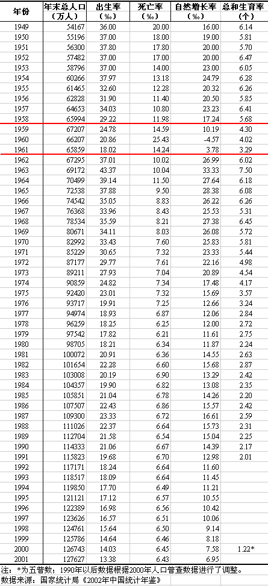
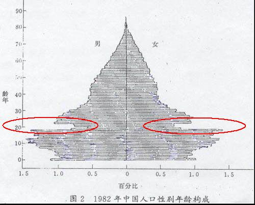

说到三年大饥荒，大伙儿最关心的一个话题就是死亡人数。所以，本系列首先要扫盲一下“非正常死亡人数”这个话题。
首先把“非正常死亡”这个概念解释一下，以免影响大伙儿的后续阅读。
每次提到“大饥荒的非正常死亡人数”，很多人都有一个误解，以为“非正常死亡”就是“活活饿死”。其实不然。“活活饿死”只占“非正常死亡”的一小部分比例。下面，俺简单说一下当年的非正常死亡，都有哪些情况。
这个好理解，俺就不细说了。
在大饥荒期间，由于食物严重匮乏，不论大人小孩，普遍都营养不良。长期的营养不良会导致各种疾病（比如：浮肿、胃溃疡、肝炎、肺结核、肾炎）。在当时的条件下，营养不良引发的疾病根本就没法治疗。为啥捏？因为大饥荒主要发生在农村，那里的医疗条件本来就差，而这类疾病又太普遍了，医务人员根本无暇顾及。所以，很大一部分人就在这些疾病的折磨下，慢慢地油尽灯枯。
这类情况占的比例估计是最高的。
在食物严重匮乏的情况下，很多农民只好吃野菜、草根、树皮来充饥。到后来，连草根、树皮都吃光了，就开始吃观音土。
要知道，野外的植物并不是都能吃的，有些植物吃多了难消化，有些吃了会中毒。而观音土吃多了，根本消化不掉，等同于自杀。
很多人就是这么被搞死的。
请注意，医生护士也是人。大饥荒的时候，他们跟其他人一样挨饿。
在某些重灾区，医疗机构会因为医务人员的大量死亡而完全瘫痪。即便某些医务人员侥幸没死，哪里还顾得上帮别人看病？所以，很多人（尤其是老人、儿童）因为得病后没人治疗而死亡。
在严重营养不良的情况下，很多已经怀孕的妇女，生下来的是死婴，还有很多流产。请注意：这种情况在人口统计数字上，是体现不出来的。
除了上述情况，还有些农民由于口粮不足，无法养活家里的多个小孩，会把年纪小的（刚出生没几年的）处理掉。假如被做掉的小孩尚未报户口，那么在人口统计数字上也是体现不出来的。
如果在古代碰上饥荒，很多农民会选择逃荒——跑到相对富裕的省份去讨饭。
但是在社会主义中国，逃荒要饭是不被允许的。在党的眼里，逃荒要饭是旧社会的陋习，新中国怎么能出现捏？！这不是给新中国抹黑吗？！所以，在大饥荒的重灾区（比如：四川、安徽、河南）很多地方官员调动民兵把守交通要道，禁止农民逃荒。
个别地区甚至会对逃荒的人就地处决。对这种野蛮行径，大伙儿可能觉得匪夷所思。其实在独裁专制的国家，这种做法很正常。比如当今的北朝鲜，连年闹饥荒。很多北朝鲜的饥民想逃荒到中国。而北朝鲜的边防军一旦发现饥民穿越国境，直接开枪射杀。
大饥荒期间，在很多省份都出现【人吃人】的惨剧。
如果说“逃荒”是给社会主义抹黑；那“人吃人”简直就是在狂砸社会主义招牌啊！我党怎么能容忍这种事情存在捏？所以，一旦发现有人吃人的事情（不管是杀活人吃肉，还是吃已死的尸体），当事者肯定会被抓去枪毙，当时还有一个专门的罪名叫【破坏尸体罪】。
不信的话，可以看俺的另一篇博文《每周转载：关于三年大饥荒（网文3篇）》。
考虑到有些网友觉得“人吃人”只是个案，俺再引用1962年夏天，刘少奇对毛泽东的谈话。当时刘少奇激动地说：
关于人吃人，最后再补充一个官方材料——《关于发生特殊案件情况的报告》——这是1961年4月23日安徽省公安厅向安徽省委报告人吃人案件的。摘录内容如下：
还有些人因为受不了这种悲惨世界，选择自行了断。有些家庭甚至是举家自杀。
在那3年里，非正常死亡的人数到底有多少捏？这个说法可就多了。
某些五毛以及某些毛派愤青（比如：林社长和孔三妈），信誓旦旦地说没人饿死；而有些学者研究后得出“非正常死亡超过4000万”的结论（这个跨度也忒大了点）。
真相到底是咋样的捏？老实说，准确的数字，俺也不知道（估计没有人真正清楚）。但是，咱们可以通过一些分析，得出一个大概的范围。
为了避免某些脑残来搅局，同时也为了堵住某些毛粉的嘴。俺今天要列举的素材，全部来自于天朝官方出版的权威材料。
《中国统计年鉴》是国家统计局每年出版的权威文献。1983年版《中国统计年鉴》的第103页，有1949年至1982年的人口数据。
俺摘录57年至65年这段，给大伙儿瞧一瞧。
从上述表格可以看出，59年到61年，全国人口不但没增长，反而明显下降。
做个简单的四则运算：
57年到59年，人口增长了2554万。
59年到61年，人口【减少】了1348万。
61年到63年，人口增长了3313万。
除了那三年，其它时间段，全国人口都呈现明显增长。
为了说明这些数字不是俺伪造的，俺再给出官方的“中国人口信息网”的图片（官网的链接在“这里”）。

某些五毛及毛派愤青说：
统计局的数字有水分——1959年和1960年的人口数，正好差了1000万，实在是太巧合了。
老实说，俺也有同感（难得俺跟毛粉有相同看法）。俺觉得：
这个数字很可能被人为篡改过了，篡改的目的是为了【缩小】死亡人数。
大家应该知道天朝真理部的行事风格——好事高调、坏事低调。像大饥荒这么严重的家丑，真理部当然要稍微掩盖一下啦。所以，统计局的数字，只会掩盖饥荒的严重程度，不会真实披露，更不会夸大饥荒的程度。
1982年的全国人口普查，是文革后的头一次全国性的普查（这次普查比老毛时代的普查要客观）。根据82年人口普查结果，可以知道当时全国人口的年龄分布。
俺找来一张官方的统计图（如下）

从这张图上，可以看到一个明显的年龄缺口（俺标红的地方）。缺口的年龄段在【19岁~22岁】。这个年龄段对应的出生时间正好是大饥荒时期。
有些五毛及毛派愤青辩解道：
因为大饥荒导致很多农民不生小孩，才导致这个年龄断层。
俺认为：
确实有很多农民在大饥荒期间减少生育。但是生育率下降只是年龄断层的一个方面，另一个方面是非常高的【婴儿死亡率】。大饥荒前后几年的平均死亡率只有1%左右。而1960年的死亡率是2.5%！单纯用出生率下降是无法说明“高死亡率”滴！
再来看看朝廷权威出版社出版的书籍。
摘自：《中国共产党的七十年》，胡绳主编，中共党史出版社1991年出版，第381页
（胡绳曾担任：毛泽东著作编辑委员会副主任，中共中央文献研究室副主任）
摘自：《毛泽东号召“进京赶考”回眸》，廖盖隆，《炎黄春秋》第2000年第3期
（廖盖隆曾担任：中共中央党史研究室副主任，新华社副总编）
摘自：《生存与发展》，中国科学院国情分析研究小组编写，科学出版社1989年出版，第39页
摘自：《当代中国的人口》，许涤新主编，中国社会科学出版社1988年出版，第74页
如果你觉得官方的权威出版物还不足以服众，俺再列举若干朝廷高官的言论。
摘自：《若干重大决策与事件的回顾》下卷，薄一波，中共中央党校出版社1993出版，第873页
（在80年代，薄一波是朝廷八元老之一，保守派官员）
摘自：《回顾中国农村改革历程》，田纪云，《中国经济时报》1998年4月30日
（田纪云和万里，都在80年代当过副总理，都是改革派官员）
1961年4月14日，胡乔木向毛太祖提交了《关于公社食堂问题的调查材料》，其中写道：
摘自：《中共中央转发毛泽东批示的几个重要文件——胡乔木关于公社食堂问题的调查材料》
《中共湘乡地方史(1949~2002)》，中共湘乡市委党史组编，中共党史出版社2004年出版，第160页
（胡乔木是党内元老，当时是老毛的秘书）
摘自：《当代四川要事实录（第一辑）》，当代口述史丛书编委会编，四川人民出版社2005年出版，第156页。
上述这几人，具有一定的代表性——既有改革派官员，也有保守派官员；既有中央官员，也有地方官员。
从上述的介绍，大伙儿应该明白——党国官方已经承认：1960年的总人口减少1000万。这就足够了！俺再啰嗦一次：如果党国承认1000万，那实际数字只会高不会低。所以，三年里的非正常死亡人数，肯定是千万级别的。至于是2千万还是4千万还是更多，其实已经不太重要了。
退一步讲，就算朝廷没有篡改数字，全国总人口在一年之内减少1000万，知道有多惊人吗？
列位看官不妨回顾一下本文前面章节的【人口历年统计表】。在大饥荒之前几年和大饥荒之后几年，天朝总人口每年都会增加1400万到2000万。而1960年居然会少掉1000万。请列位看官自个儿琢磨琢磨吧。
为了给大伙儿加深印象，不妨拿八年抗战做一个对比（这个对比，俺在去年的博文《谁是最可恨的人？——写给仇日愤青们》已经写过一次了，今天再老调重弹）。
在1937年~1945年期间，日本人杀中国人的速度，远远赶不上大饥荒非正常死亡的速度。要知道，对日本人而言，他们杀的是外族人。而共产党统治下，搞死的是自己人。1937年-1945是战争年代，而1959年~1960年是和平年代。
现在，大家知道伟光正有多牛逼了吧——不花多少力气，无需动刀动枪，轻轻松松就搞死几千万人。日本皇军跟我党比起来，简直就是小儿科嘛！对我党的杀人效率，俺是佩服得五体投地啊！
在本文的结尾，俺要感谢一下林社长。正是因为他的满口喷粪，网民才会掀起反思大饥荒的热烈讨论，俺才会想起来写继续写大饥荒那段历史。在本系列后续的博文中，会帮大伙儿分析一下，为啥死亡人数如此之高。
回到本系列的目录
★啥是“非正常死亡”？
首先把“非正常死亡”这个概念解释一下，以免影响大伙儿的后续阅读。
每次提到“大饥荒的非正常死亡人数”，很多人都有一个误解，以为“非正常死亡”就是“活活饿死”。其实不然。“活活饿死”只占“非正常死亡”的一小部分比例。下面，俺简单说一下当年的非正常死亡，都有哪些情况。
◇活活饿死
这个好理解，俺就不细说了。
◇因【营养不良】死亡
在大饥荒期间，由于食物严重匮乏，不论大人小孩，普遍都营养不良。长期的营养不良会导致各种疾病（比如：浮肿、胃溃疡、肝炎、肺结核、肾炎）。在当时的条件下，营养不良引发的疾病根本就没法治疗。为啥捏？因为大饥荒主要发生在农村，那里的医疗条件本来就差，而这类疾病又太普遍了，医务人员根本无暇顾及。所以，很大一部分人就在这些疾病的折磨下，慢慢地油尽灯枯。
这类情况占的比例估计是最高的。
◇因【食物中毒】死亡
在食物严重匮乏的情况下，很多农民只好吃野菜、草根、树皮来充饥。到后来，连草根、树皮都吃光了，就开始吃观音土。
要知道，野外的植物并不是都能吃的，有些植物吃多了难消化，有些吃了会中毒。而观音土吃多了，根本消化不掉，等同于自杀。
很多人就是这么被搞死的。
◇【医疗体系崩溃】加剧前两种死亡
请注意，医生护士也是人。大饥荒的时候，他们跟其他人一样挨饿。
在某些重灾区，医疗机构会因为医务人员的大量死亡而完全瘫痪。即便某些医务人员侥幸没死，哪里还顾得上帮别人看病？所以，很多人（尤其是老人、儿童）因为得病后没人治疗而死亡。
◇【婴儿】的非正常死亡
在严重营养不良的情况下，很多已经怀孕的妇女，生下来的是死婴，还有很多流产。请注意：这种情况在人口统计数字上，是体现不出来的。
除了上述情况，还有些农民由于口粮不足，无法养活家里的多个小孩，会把年纪小的（刚出生没几年的）处理掉。假如被做掉的小孩尚未报户口，那么在人口统计数字上也是体现不出来的。
◇因为【逃荒】被枪毙
如果在古代碰上饥荒，很多农民会选择逃荒——跑到相对富裕的省份去讨饭。
但是在社会主义中国，逃荒要饭是不被允许的。在党的眼里，逃荒要饭是旧社会的陋习，新中国怎么能出现捏？！这不是给新中国抹黑吗？！所以，在大饥荒的重灾区（比如：四川、安徽、河南）很多地方官员调动民兵把守交通要道，禁止农民逃荒。
个别地区甚至会对逃荒的人就地处决。对这种野蛮行径，大伙儿可能觉得匪夷所思。其实在独裁专制的国家，这种做法很正常。比如当今的北朝鲜，连年闹饥荒。很多北朝鲜的饥民想逃荒到中国。而北朝鲜的边防军一旦发现饥民穿越国境，直接开枪射杀。
◇因为【吃人 ＆ 被吃】
大饥荒期间，在很多省份都出现【人吃人】的惨剧。
如果说“逃荒”是给社会主义抹黑；那“人吃人”简直就是在狂砸社会主义招牌啊！我党怎么能容忍这种事情存在捏？所以，一旦发现有人吃人的事情（不管是杀活人吃肉，还是吃已死的尸体），当事者肯定会被抓去枪毙，当时还有一个专门的罪名叫【破坏尸体罪】。
不信的话，可以看俺的另一篇博文《每周转载：关于三年大饥荒（网文3篇）》。
考虑到有些网友觉得“人吃人”只是个案，俺再引用1962年夏天，刘少奇对毛泽东的谈话。当时刘少奇激动地说：
饿死这么多人，历史上要写上你我的！人相食，是要上书的！（这可不是俺瞎掰的，在维基百科的这里可以查到刘少奇这句话）大伙儿想想看，如果人吃人仅仅是个案，刘少奇会特地拿出来强调吗？
关于人吃人，最后再补充一个官方材料——《关于发生特殊案件情况的报告》——这是1961年4月23日安徽省公安厅向安徽省委报告人吃人案件的。摘录内容如下：
自1959年以来，共发生1289起，其中阜阳专区9个县发生302起，蚌埠专区15个县发生721起，芜湖专区3个县发生55起，六安专区5个县发生8起，安庆专区2个县发生2起，合肥市3个县发生201起。发生时间，绝大部分在1959年冬和1960年春。宣城县发生的30起特殊案件，有28起是1959年10月至1960年2月发生的；蚌埠专区的凤阳县等10个县1960年共发生此类案件619起，其中发生在第一季度的512起，发生在第二季度的105起，发生在第三季度的2起，第四季度的个别地方虽有发生，但为数极少。
◇自杀
还有些人因为受不了这种悲惨世界，选择自行了断。有些家庭甚至是举家自杀。
★官方的统计数据
在那3年里，非正常死亡的人数到底有多少捏？这个说法可就多了。
某些五毛以及某些毛派愤青（比如：林社长和孔三妈），信誓旦旦地说没人饿死；而有些学者研究后得出“非正常死亡超过4000万”的结论（这个跨度也忒大了点）。
真相到底是咋样的捏？老实说，准确的数字，俺也不知道（估计没有人真正清楚）。但是，咱们可以通过一些分析，得出一个大概的范围。
为了避免某些脑残来搅局，同时也为了堵住某些毛粉的嘴。俺今天要列举的素材，全部来自于天朝官方出版的权威材料。
◇《中国统计年鉴》
《中国统计年鉴》是国家统计局每年出版的权威文献。1983年版《中国统计年鉴》的第103页，有1949年至1982年的人口数据。
俺摘录57年至65年这段，给大伙儿瞧一瞧。
| 年份 | 年末人口(万) | 出生率(‰) | 死亡率(‰) | 自然增长率(‰) |
|---|---|---|---|---|
| 1957 | 64,653 | 34.03 | 10.80 | 23.23 |
| 1958 | 65,994 | 29.22 | 11.98 | 17.24 |
| 1959 | 67,207 | 24.78 | 14.59 | 10.19 |
| 1960 | 66,207 | 20.86 | 25.43 | - 4.57 |
| 1961 | 65,859 | 18.02 | 14.24 | 3.78 |
| 1962 | 67,295 | 37.01 | 10.02 | 26.99 |
| 1963 | 69,172 | 43.37 | 10.04 | 33.33 |
| 1964 | 70,499 | 39.14 | 11.50 | 27.64 |
| 1965 | 72,538 | 37.88 | 9.50 | 28.38 |
从上述表格可以看出，59年到61年，全国人口不但没增长，反而明显下降。
做个简单的四则运算：
57年到59年，人口增长了2554万。
59年到61年，人口【减少】了1348万。
61年到63年，人口增长了3313万。
除了那三年，其它时间段，全国人口都呈现明显增长。
为了说明这些数字不是俺伪造的，俺再给出官方的“中国人口信息网”的图片（官网的链接在“这里”）。
某些五毛及毛派愤青说：
统计局的数字有水分——1959年和1960年的人口数，正好差了1000万，实在是太巧合了。
老实说，俺也有同感（难得俺跟毛粉有相同看法）。俺觉得：
这个数字很可能被人为篡改过了，篡改的目的是为了【缩小】死亡人数。
大家应该知道天朝真理部的行事风格——好事高调、坏事低调。像大饥荒这么严重的家丑，真理部当然要稍微掩盖一下啦。所以，统计局的数字，只会掩盖饥荒的严重程度，不会真实披露，更不会夸大饥荒的程度。
◇1982年全国人口普查
1982年的全国人口普查，是文革后的头一次全国性的普查（这次普查比老毛时代的普查要客观）。根据82年人口普查结果，可以知道当时全国人口的年龄分布。
俺找来一张官方的统计图（如下）
从这张图上，可以看到一个明显的年龄缺口（俺标红的地方）。缺口的年龄段在【19岁~22岁】。这个年龄段对应的出生时间正好是大饥荒时期。
有些五毛及毛派愤青辩解道：
因为大饥荒导致很多农民不生小孩，才导致这个年龄断层。
俺认为：
确实有很多农民在大饥荒期间减少生育。但是生育率下降只是年龄断层的一个方面，另一个方面是非常高的【婴儿死亡率】。大饥荒前后几年的平均死亡率只有1%左右。而1960年的死亡率是2.5%！单纯用出生率下降是无法说明“高死亡率”滴！
◇官方的权威出版物
再来看看朝廷权威出版社出版的书籍。
据正式统计仅1960年全国总人口就比上年减少1000万
摘自：《中国共产党的七十年》，胡绳主编，中共党史出版社1991年出版，第381页
（胡绳曾担任：毛泽东著作编辑委员会副主任，中共中央文献研究室副主任）
非正常死亡的人数达到4000万人。
摘自：《毛泽东号召“进京赶考”回眸》，廖盖隆，《炎黄春秋》第2000年第3期
（廖盖隆曾担任：中共中央党史研究室副主任，新华社副总编）
按保守的估计，因营养不良而死亡约1500万人
摘自：《生存与发展》，中国科学院国情分析研究小组编写，科学出版社1989年出版，第39页
三年困难时期死亡人数超过平常两三倍
摘自：《当代中国的人口》，许涤新主编，中国社会科学出版社1988年出版，第74页
◇朝廷命官的说法
如果你觉得官方的权威出版物还不足以服众，俺再列举若干朝廷高官的言论。
据统计，1960年全国总人口减少1000多万。
摘自：《若干重大决策与事件的回顾》下卷，薄一波，中共中央党校出版社1993出版，第873页
（在80年代，薄一波是朝廷八元老之一，保守派官员）
万里回忆道：'三年困难时期，到处浮肿病，饿死人。据了解，光安徽省的所谓非正常死亡人口就三四百万。'
摘自：《回顾中国农村改革历程》，田纪云，《中国经济时报》1998年4月30日
（田纪云和万里，都在80年代当过副总理，都是改革派官员）
1961年4月14日，胡乔木向毛太祖提交了《关于公社食堂问题的调查材料》，其中写道：
胡乔木在给毛泽东的信中写道：'到原东郊公社现陈赓公社的湘乡楠香大队、七星大队、水底大队、石江大队看了一下，情况也很严重。楠香和石江大队，三年来死亡率都在20％左右。据县委说，全县三年来死亡三万人，去年约死二万人，而以去年年底最为严重。'
摘自：《中共中央转发毛泽东批示的几个重要文件——胡乔木关于公社食堂问题的调查材料》
《中共湘乡地方史(1949~2002)》，中共湘乡市委党史组编，中共党史出版社2004年出版，第160页
（胡乔木是党内元老，当时是老毛的秘书）
原重庆市委书记、四川省政协主席廖伯康回忆，在三年困难时期，四川省非正常死亡人口数'有文件可查的是一千万'，考虑到文件没有完全反映非正常死亡人口数，还要'再加二百五十万'。
摘自：《当代四川要事实录（第一辑）》，当代口述史丛书编委会编，四川人民出版社2005年出版，第156页。
上述这几人，具有一定的代表性——既有改革派官员，也有保守派官员；既有中央官员，也有地方官员。
★一年内总人口减少1000万是什么概念？
从上述的介绍，大伙儿应该明白——党国官方已经承认：1960年的总人口减少1000万。这就足够了！俺再啰嗦一次：如果党国承认1000万，那实际数字只会高不会低。所以，三年里的非正常死亡人数，肯定是千万级别的。至于是2千万还是4千万还是更多，其实已经不太重要了。
退一步讲，就算朝廷没有篡改数字，全国总人口在一年之内减少1000万，知道有多惊人吗？
列位看官不妨回顾一下本文前面章节的【人口历年统计表】。在大饥荒之前几年和大饥荒之后几年，天朝总人口每年都会增加1400万到2000万。而1960年居然会少掉1000万。请列位看官自个儿琢磨琢磨吧。
★对比一下八年抗战
为了给大伙儿加深印象，不妨拿八年抗战做一个对比（这个对比，俺在去年的博文《谁是最可恨的人？——写给仇日愤青们》已经写过一次了，今天再老调重弹）。
在1937年~1945年期间，日本人杀中国人的速度，远远赶不上大饥荒非正常死亡的速度。要知道，对日本人而言，他们杀的是外族人。而共产党统治下，搞死的是自己人。1937年-1945是战争年代，而1959年~1960年是和平年代。
现在，大家知道伟光正有多牛逼了吧——不花多少力气，无需动刀动枪，轻轻松松就搞死几千万人。日本皇军跟我党比起来，简直就是小儿科嘛！对我党的杀人效率，俺是佩服得五体投地啊！
★结尾
在本文的结尾，俺要感谢一下林社长。正是因为他的满口喷粪，网民才会掀起反思大饥荒的热烈讨论，俺才会想起来写继续写大饥荒那段历史。在本系列后续的博文中，会帮大伙儿分析一下，为啥死亡人数如此之高。
回到本系列的目录
版权声明
本博客所有的原创文章，作者皆保留版权。转载必须包含本声明，保持本文完整，并以超链接形式注明作者编程随想和本文原始地址：
https://program-think.blogspot.com/2012/05/three-years-famine-1.html
本博客所有的原创文章，作者皆保留版权。转载必须包含本声明，保持本文完整，并以超链接形式注明作者编程随想和本文原始地址：
https://program-think.blogspot.com/2012/05/three-years-famine-1.html